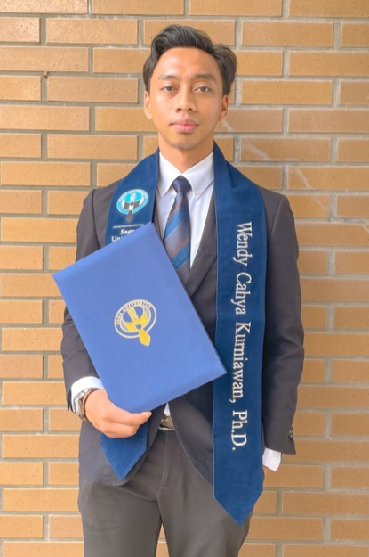

International Journal of Advanced Computer Science and Applications
(IJACSA)
DOI
AIST Japan · Post-Doctoral Researcher
Ph.D. in AI & Data Science
Advancing human-centered intelligence, collaborative robotics & digital learning.
I am Wendy Cahya Kurniawan—an AI & Digital Education Researcher investigating the interplay between humans and intelligent machines at the National Institute of Advanced Industrial Science and Technology (AIST), Japan.
I have always appreciated the beauty of logic and science. My fascination with Artificial Intelligence originated from a profound curiosity about the intricate interplay between humans and machines—particularly their capacity to elevate human care, safety, well-being, and happiness.
My research journey in AI began during an international exchange program at Saga University, Japan, where I dedicated my work to human-machine interaction and neural networks. After graduating from the Department of Electrical Engineering at Universitas Negeri Malang, I completed my Master's degree in Automation Technology at National Taipei University of Technology (Taipei Tech), followed by my Doctoral degree in Computer and Information Science (AI & Data Science) at Saga University under the Japanese Government (MEXT) Scholarship.
Today, as a Post-Doctoral Researcher at AIST Japan, I welcome interdisciplinary dialogue and collaborative discovery. Let us keep our spirit high and build a better future together.

Wendy C. Kurniawan, Ph.D.
Saga, JP
Pillar 01
Human-Robot Collaboration
Non-verbal motion cues, hybrid SSM/PFL safety protocols, and mixed-reality assembly support.
Pillar 02
Computer Vision & Sensing
Keypoint-based sign language CNNs, posture classification, and IoT chemical/acoustic sensor networks.
Pillar 03
Intelligent Digital Education
Cloud GPU practicum media, mobile collaborative classrooms, and international STEM outreach.
Pillar 04
Academic Leadership
General Chairman of PPI Saga (2024–2025) and PPI Taipei Tech (2021–2022).
-
2026 — Present
Post-Doctoral Researcher AIST Japan
IoT Chemical Sensor Research Group, National Institute of Advanced Industrial Science and Technology (AIST), Japan.
-
2026
Received Doctoral Degree (Ph.D.) in AI and Data Science Doctorate
Computer and Information Science, Saga University, Japan.
-
2024 — 2025
General Chairman
Indonesian Students' Association in Saga (PPI Saga), Japan.
-
2023 — 2026
Japanese Government (MEXT) Doctoral Scholarship Fellowship
Doctoral Program in AI and Data Science, Saga University, Japan.
-
2023
Received Master Degree (M.Sc.) in Automation Technology Master's
Graduate Institute of Automation Technology, National Taipei University of Technology (Taipei Tech), Taiwan.
-
2022
Lead Instructor — Arduino & Makey Makey Winter/Summer Camps
Art Together & National Taipei University of Technology (Summer & Winter 2022 cohorts).
-
2021 — 2022
General Chairman & Student Representative Council
Indonesian Students' Association at National Taipei University of Technology (PPI Taipei Tech) & PPI Taiwan.
-
2021
Student Exchange Participant — Foreign Study Online Program
Nagoya University, Japan & Committee on Global Engineering Culture Exchange Festival (GECEF), Universitas Negeri Malang.
-
2021
Lecturer Assistant & Virtual Machine Classroom Researcher
- Engineering Optimization Methods at National Taipei University of Technology
- INOVBEL Research at Universitas Negeri Malang
- Author at ICEEIE & IEIT 2021
-
2020 — 2022
International Graduate Student Scholarship
Graduate Institute of Automation Technology, National Taipei University of Technology.
-
2020
Received Bachelor Degree in Electrical Engineering Education Bachelor's
Universitas Negeri Malang (UM), Indonesia; commenced Master's Program at NTUT Taiwan.
-
2018 — 2019
SPACE Fall-Program Exchange Scholar & Research Collaborator
Saga University, Japan — Joint research collaboration with Electrical Engineering, Universitas Negeri Malang.
-
2018 — 2019
International Invention Awards (Gold, Silver & Best of the Best) Honors
- Gold Award at ISAIID (UiTM Kedah, Malaysia, 2019)
- Silver Award at 5th IYIA (2019)
- Gold & Best of the Best at Scientific Great Moment Exhibition (Universitas Brawijaya, 2018)
- KEMRISTEKDIKTI PKM-KC Grant Recipient
-
2019 — 2020
ICOVET & ICEEIE Author, Presenter & Committee
4th International Conference on Vocational Education and Training (ICOVET 2020) & e-Collab Classroom INOVBEL Research, Universitas Negeri Malang.
-
2017
B-PPA/PPA Academic Excellence Scholarship & Best Group Presentation
- Engineering Faculty, Universitas Negeri Malang
- CommTech Integrated Initiative at Institut Teknologi Sepuluh Nopember (ITS)
- Internship at PT. Harapan Bangsa Trainer Center
-
2015 — 2017
Undergraduate Lecturer Assistant (6 Core Courses)
Universitas Negeri Malang — Key Coursework:
- Advanced Computer Interface
- Advanced Microprocessor
- Intelligent System
- Sensors & Actuators
- Signal Processing
- Analog Electronics
- 2013 — 2018
Industry R&D & SEO Strategist
Research & Development at CV. Bintang Antik Sejahtera (2013–2018) and SEO Strategist at CV. Mesinjatim (2014–2018).
- 2002 — 2013
Foundational Education & Regional Academic Distinction
- Top 5th Highest National Exam Score at SMA Negeri 1 Kauman, Tulungagung (2011–2013)
- Student Council at SMPN 1 Campurdarat, Tulungagung
- Top 3rd Regional Exam Score at SDN 1 Campurdarat, Tulungagung
2025 SICE Festival with Annual Conference (SICE FES)
DOI
Effects of a Mixed Reality-Based Support System on Productivity in 2D Assembly Task
DOI: 10.23919/SICEFES67750.2025.11236597
2025 SICE Festival with Annual Conference (SICE FES)
DOI
The Effect of Human Task Interventions in Collaborative AI Robot and Human Assembly Lines
DOI: 10.23919/SICEFES67750.2025.11236661
International Journal of Robotics & Control Systems (IJRCS)
DOI
Hand Keypoint-Based CNN for SIBI Sign Language Recognition
DOI: 10.31763/ijrcs.v5i2.1745
Indonesian Journal of Data and Science (IJODAS)
DOI
Yoga Posture Recognition and Classification Using YOLOv5
DOI: 10.56705/ijodas.v6i2.228
Artificial Life and Robotics · Springer Japan
DOI
Design of human motion detection for non-verbal collaborative robot communication cue
DOI: 10.1007/s10015-024-01000-2
7th Int. Conf. on Electrical, Electronics, and Information Engineering
(ICEEIE)
DOI
Development of Photogrammetry Application for 3D Surface Reconstruction
Malang, Indonesia · DOI: 10.1109/ICEEIE52663.2021.9616728
7th Int. Conf. on Electrical, Electronics, and Information Engineering
(ICEEIE)
DOI
Study on Hand Keypoint Framework for Sign Language Recognition
Malang, Indonesia · DOI: 10.1109/ICEEIE52663.2021.9616851
1st Int. Conf. on Education and Information Technology (IEIT)
DOI
Design and Development of Online Media Learning on Analog Electronics Course under COVID-19
Politeknik Negeri Malang · DOI: 10.1109/IEIT53149.2021.9587415
1st Int. Conf. on Education and Information Technology (IEIT)
DOI
Design of Virtual Machine Collaboration on Analog Electronics Course
Politeknik Negeri Malang · DOI: 10.1109/IEIT53149.2021.9587431
4th Int. Conf. on Vocational Education and Training (ICOVET)
DOI
Design and Improvement of e-Collab Classroom as Learning Support System on Intelligent System Subject
Universitas Negeri Malang · DOI: 10.1109/ICOVET50258.2020.9229896
4th Int. Conf. on Vocational Education and Training (ICOVET)
DOI
Development of e-Collab Classroom for CNN Practice on Electrical Engineering
Universitas Negeri Malang · DOI: 10.1109/ICOVET50258.2020.9230345
6th Int. Conf. on Electrical, Electronics, and Information Engineering
(ICEEIE)
DOI
An Improvement on QR Code Limit Angle Detection using Convolutional Neural Network
Sanur, Bali · DOI: 10.1109/ICEEIE47180.2019.8981449
Undergraduate Thesis · Department of Electrical Engineering, UM
Repo
Development of Media Practice QR Code Detection using CNN for Intelligent System Course
Malang, Jawa Timur · UM Institutional Repository
ISAIID (UiTM Malaysia) & 5th International Young Inventors Award
(IYIA)
SANATORI / SASORI: Smart Automatic Sonar Technology and Restoration Based on Ultrasonic Coral Reef Detection
Kedah, Malaysia & Denpasar, Bali
Direct Electronic Mail
wendycahya@gmail.com
Primary correspondence for research inquiries, postdoctoral collaborations, and academic invitations.
Social & Code Networks
Academic & External Portals